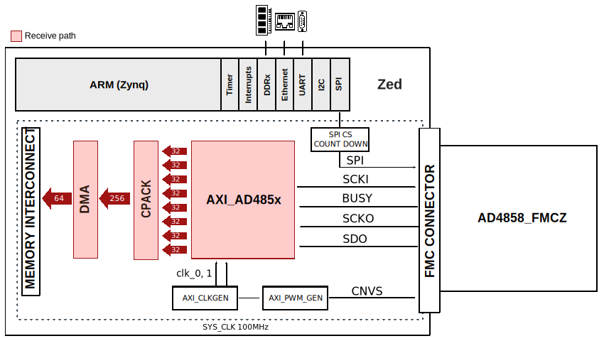
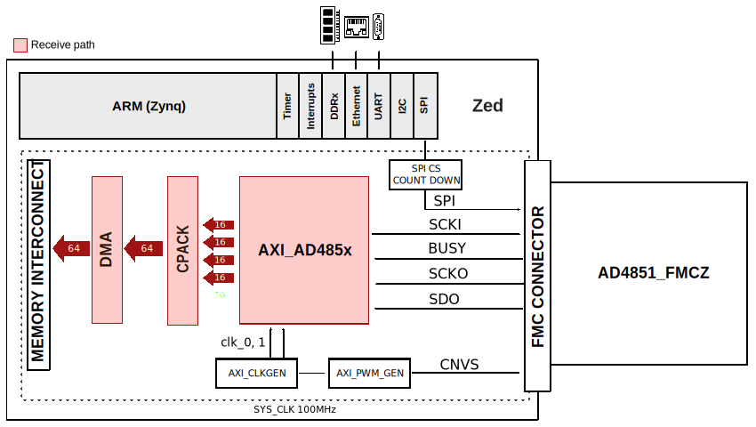

AD485x_FMCZ HDL project#
Overview#
This design is meant to support the AD485x family. For example, EVAL-AD4858 board contains AD4858 chip, which is a 20-bit, low noise 8-channel simultaneous sampling successive approximation register (SAR) ADC, with buffered differential, wide common range picoamp inputs.
Supported boards#
Supported devices#
Supported carriers#
Evaluation board |
Carrier |
FMC slot |
|---|---|---|
FMC LPC |
||
FMC LPC |
||
FMC LPC |
||
FMC LPC |
||
FMC LPC |
||
FMC LPC |
||
FMC LPC |
||
FMC LPC |
Block design#
AD4858_FMCZ Block diagram#
{kind=link}
AD4857_FMCZ Block diagram#

AD4854_FMCZ Block diagram#

AD4851_FMCZ Block diagram#
{kind=link}
Clock scheme#
Depending on the configuration used (CMOS or LVDS), the scheme differs a little bit. In the sense that there is an extra clock ‘external_fast_clk’, see the details in the diagram below.
For these evaluation boards, we used an internal clock of the FPGA. Therefore, the external clocks given to AXI_AD485x IP are:
in LVDS mode:
external_clk = 200 MHz
external_fast_clk = 400 MHz
in CMOS mode:
external_clk = 100MHz

CPU/Memory interconnects addresses#
The addresses are dependent on the architecture of the FPGA, having an offset added to the base address from HDL(see more at HDL Architecture).
Instance |
Zynq |
|---|---|
axi_ad485x |
0x43c00000 |
axi_pwm_gen |
0x43d00000 |
ad485x_dma |
0x43e00000 |
adc_clkgen |
0x44000000 |
SPI connections#
SPI type |
SPI manager instance |
SPI subordinate |
CS |
|---|---|---|---|
PS |
SPI 0 |
AD485x |
0 |
Interrupts#
Below are the Programmable Logic interrupts used in this project.
Instance name |
HDL |
Linux Zynq |
Actual Zynq |
|---|---|---|---|
axi_ad485x_dma |
10 |
54 |
86 |
These are the board-specific interrupts (found in here).
Building the HDL project#
The design is built upon ADI’s generic HDL reference design framework. ADI distributes the bit/elf files of these projects as part of the ADI Kuiper Linux. If you want to build the sources, ADI makes them available on the HDL repository. To get the source you must clone the HDL repository.
Then go to the project location (projects/ad485x_fmc/carrier) and run the make command by typing in your command prompt (this example is for ZedBoard):
Linux/Cygwin/WSL
user@analog:~$ cd hdl/projects/ad485x_fmc/zed
user@analog:~$ make
A more comprehensive build guide can be found in the Build an HDL project user guide.
Resources#
More information#
Support#
Analog Devices, Inc. will provide limited online support for anyone using the reference design with ADI components via the EngineerZone FPGA reference designs forum.
For questions regarding the ADI Linux device drivers, device trees, etc. from our Linux GitHub repository, the team will offer support on the EngineerZone Linux software drivers forum.
For questions concerning the ADI No-OS drivers, from our No-OS GitHub repository, the team will offer support on the EngineerZone microcontroller No-OS drivers forum.
It should be noted, that the older the tools’ versions and release branches are, the lower the chances to receive support from ADI engineers.